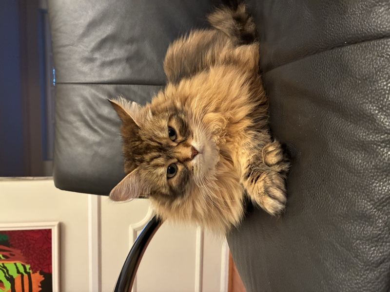

iii. — About
Catherine Kim is a practicing primary care physician, educator, and researcher at the University of Michigan. Her award-winning short fiction has appeared in Ploughshares, The Kenyon Review, The Alaska Quarterly Review, The Southern Review, Chicago Quarterly Review, The Masters Review, LitMag, and other literary journals.
iv. — Stories
v. — Book
Forthcoming from Wayne State University Press in spring 2028.
For publishing, rights, and media inquiries, contact Aevitas Creative Management.
vi. — Events
vii. — Contact
Janet Silver & Lauren Liebow
Aevitas Creative Management
19 W. 21st Street, Suite 501
New York, NY 10010
+1 (212) 765-6900